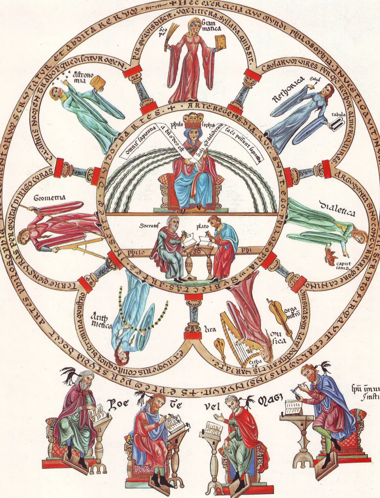
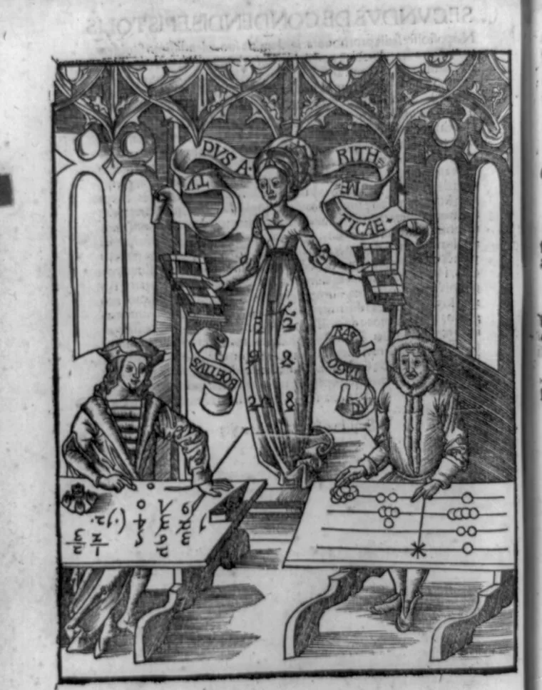
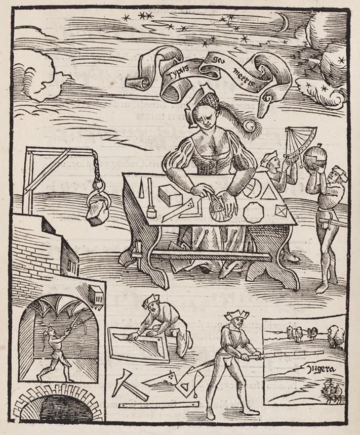
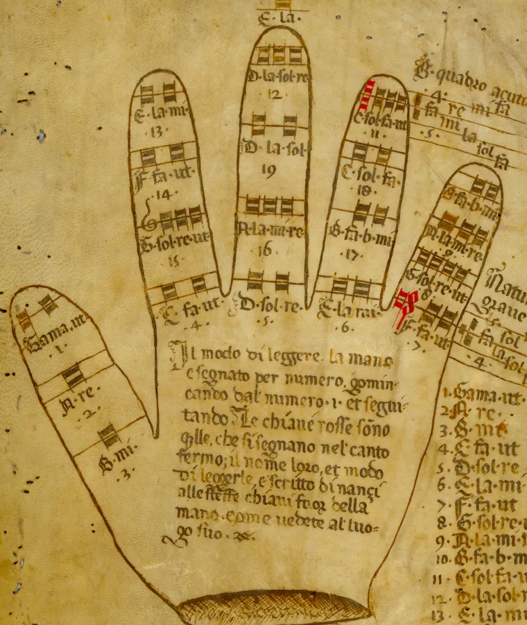
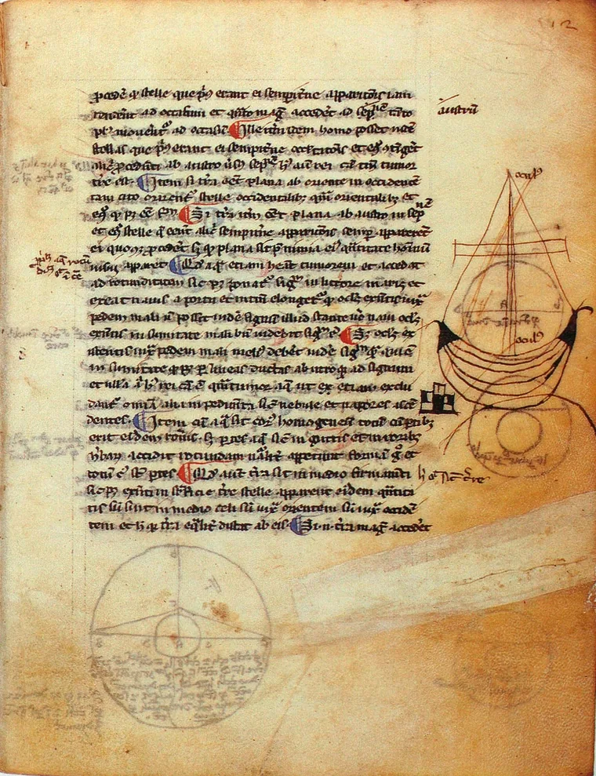

History of Ideas · Complex Systems & Humanities
The Quadrivium
The quadrivium ("the four ways") is a group of four mathematical arts — arithmetic, geometry, music, and astronomy — that formed the advanced core of classical and medieval education. Together with the trivium (grammar, logic, and rhetoric), it made up the seven liberal arts: a complete course of study meant to train the mind to reason clearly and see the order underlying the world.
What Is the Quadrivium?
Quadrivium is Latin for "the four roads" or "the four ways." It names a curriculum — not a single subject — made of four mathematical arts that Greek and Roman thinkers believed, taken together, revealed the numerical order beneath everything from music to the motion of the planets.
The philosopher and statesman Boethius (c. 480–524 CE) is usually credited with grouping arithmetic, geometry, music, and astronomy under this single name in his writings on mathematics, though the idea that these four subjects belonged together goes back to Plato and the Pythagoreans centuries earlier. Boethius's version of the curriculum became the standard shape of advanced education across medieval Europe for roughly a thousand years.
A student didn't choose one of the four — the quadrivium was studied as a set, on the reasoning that number shows up everywhere: in quantity alone, in quantity applied to space, in quantity applied to sound and time, and in quantity applied to the motion of the heavens.

The Four Mathematical Arts
Each subject in the quadrivium studies number, but applied to a different kind of thing.

The study of pure number and quantity: how numbers relate to each other through counting, ratio, and proportion, with no reference to anything physical.

The study of magnitude at rest: points, lines, angles, and shapes, and the fixed relationships between them in space.

The study of number as ratio and proportion applied to sound: why certain string lengths, played together, produce harmony instead of noise.

The study of magnitude in motion: the mathematical patterns governing the sun, moon, planets, and stars as they move through space and time.
Boethius's Logic: A 2×2 of Number
The four subjects aren't a random list — Boethius arranged them along two questions: is the quantity pure or applied, and is it at rest or in motion? That produces a tidy grid, with each art occupying one corner.
Seen this way, the quadrivium is a single idea — quantity, and how it relates to itself — examined from four angles. That's also why music sits in this list at all: to a classical thinker, a musical interval like an octave (a 2:1 ratio of string lengths) or a perfect fifth (3:2) is a mathematical fact about number before it's ever an aesthetic one.
Why did music count as mathematics?
Is this the same as modern astronomy or geometry?
Trivium + Quadrivium = Seven Liberal Arts
The quadrivium was the second half of a two-stage classical curriculum. Students began with the trivium ("the three ways"), which trained them to use language and reasoning well, before moving on to the quadrivium, which trained them to understand the world through number.
- 1Grammar — the structure and rules of language: how to read and write correctly.
- 2Logic (dialectic) — the rules of valid reasoning: how to argue and evaluate arguments without error.
- 3Rhetoric — the art of persuasive, effective expression: how to communicate reasoning clearly to others.
- 4Arithmetic — pure number and quantity.
- 5Geometry — number and magnitude in space.
- 6Music — number, ratio, and harmony in time.
- 7Astronomy — the mathematical laws governing celestial bodies in space and time.
Medieval scholars saw this progression as complete on purpose: the trivium sharpened how a student could think and communicate, and the quadrivium gave them something substantial — the order of the universe itself — to think and communicate about. Many classical and medieval scholars also treated the quadrivium's uncovering of numerical order as evidence of a designed, mathematically ordered cosmos, an idea that shaped centuries of natural philosophy long before it became "science" in the modern sense.
From Quadrivium to Modern Science
Each of the four arts grew into a modern subject: arithmetic and geometry became math class, music's ratios became the physics of sound, and astronomy's search for patterns in the sky became space science.
But the quadrivium's biggest idea — that all of this is really one connected way of understanding the world — didn't survive so easily. Here's what happened to it next:
- 1One Big Idea — for over a thousand years, math, music, and the stars were taught as a single connected subject: the quadrivium.
- 2Renaissance Hold-Outs — thinkers like Leonardo da Vinci kept trying to master everything at once, refusing to pick just one field.
- 3The Big Split — as science grew, schools broke it into separate classes with separate experts: math over here, music over there, astronomy somewhere else.
- 4Regrouping — in the 1900s, science, technology, engineering, and math got bundled back together under one name: STEM.
- 5Art Comes Back — today's STEAM adds art back into the mix, echoing something the quadrivium assumed the whole time.
Practice Problems
Test what you know about the four arts, their logic, and the ratios behind musical harmony.
Easy1. Which of these four subjects is not part of the quadrivium?
Easy2. Which quadrivium subject studies "magnitude at rest" — points, lines, and shapes fixed in space?
Medium3. Which medieval scholar is usually credited with grouping arithmetic, geometry, music, and astronomy together as "the quadrivium"?
Medium4. In musical ratios, an octave is a 2:1 relationship between frequencies. If a string vibrating at 220 Hz is shortened to sound the octave above it, what frequency does it produce?
Medium5. A perfect fifth is a 3:2 frequency ratio. If the root note is 200 Hz, what frequency is a perfect fifth above it?
Easy6. Put the trivium subjects in their classical teaching order.
Challenge7. In Boethius's 2×2 classification, astronomy is "applied quantity" that is "in motion." Which other subject shares the "in motion" column with astronomy, and what do they have in common?
Challenge8. Which modern field is the most direct descendant of quadrivium-era music theory's study of ratio and vibration?